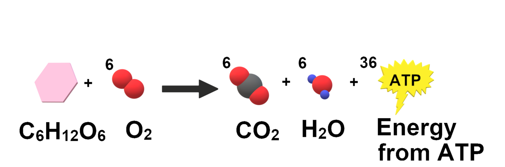

Nghịch Lý Hiếu Khí: Tại Sao Tập Chậm Lại Giúp Bạn Nhanh Hơn Và Sống Thọ Hơn?
Trong văn hóa thể hình đại chúng, một "buổi tập chất lượng" thường được đánh giá qua cảm giác kiệt sức sau khi bước ra khỏi phòng tập—ướt đẫm mồ hôi, thở dốc và đẩy nhịp tim vào vùng đỏ tối đa ở mọi buổi tập. Thế nhưng, khi các nhà sinh lý học thể thao hàng đầu như Tiến sĩ Stephen Seiler và Tiến sĩ Iñigo San Millán (huấn luyện viên của nhà vô địch Tour de France Tadej Pogačar kiêm giáo sư tại Trường Y Đại học Colorado) phân tích nhật ký tập luyện của những vận động viên sức bền vĩ đại nhất thế giới, họ đã phát hiện ra một nghịch lý đáng kinh ngạc.
Các vận động viên đua thuyền, đạp xe, trượt tuyết băng đồng và chạy Marathon đỉnh cao đều tuân thủ Mô hình Tập luyện Phân cực 80/20: họ dành khoảng 80% tổng thời lượng tập luyện hàng tuần ở vùng Zone 2—một nhịp độ hiếu khí nhẹ nhàng, hoàn toàn có thể trò chuyện thoải mái—và chỉ dành 20% ở các vùng cường độ cao Zone 4 và Zone 5. Quan trọng hơn cả, các nghiên cứu chuyển hóa lâm sàng chỉ ra rằng Zone 2 chính là kích thích vận động mạnh mẽ nhất giúp trẻ hóa ti thể, tăng độ nhạy insulin và tối ưu hóa khả năng đốt mỡ ở người trưởng thành.

Điều Gì Diễn Ra Bên Trong Tế Bào Khi Bạn Tập Ở Vùng Zone 2?
Để hiểu vì sao Zone 2 tạo ra những thay đổi sinh học kỳ diệu mà các bài tập cường độ cao (HIIT) không thể thay thế, chúng ta cần quan sát cách các sợi cơ xương huy động nhiên liệu qua Mô hình 5 Vùng Nhịp Tim:
- Huy Động Chọn Lọc Sợi Cơ Bền Nhóm I (Type I Slow-Twitch): Ở vùng Zone 2, hệ thần kinh của bạn chỉ huy động các sợi cơ co rút chậm nhóm I. Những sợi cơ này chứa mật độ dày đặc ti thể (mitochondria)—những "nhà máy nhiệt điện" siêu nhỏ dùng oxy để đốt cháy mỡ và đường glucose tạo ra năng lượng ATP (phosphoryl hóa oxy hóa)—và được bao quanh bởi mạng lưới mao mạch dồi dào.
- Đạt Đỉnh Đốt Mỡ Tuyệt Đối (FATmax): Tại ngưỡng Zone 2, ti thể oxy hóa axit béo tự do ở tốc độ tuyệt đối cao nhất. Ngay khoảnh khắc bạn nôn nóng tăng tốc và vượt sang Zone 3 hoặc Zone 4, cơ thể không kịp sản xuất ATP từ mỡ nữa. Hệ thần kinh lập tức huy động sợi cơ nhanh nhóm II (Type II glycolytic), đóng sập cánh cửa đốt mỡ và chuyển sang đốt kho dự trữ đường glycogen hữu hạn trong cơ bắp.
- Tái Sử Dụng Lactate & Kênh Vận Chuyển MCT1 (San-Millán & Brooks, 2018): Trái ngược với quan niệm cũ kỹ trong phòng tập, lactate không phải là chất thải độc hại gây mỏi cơ—mà là một nguồn nhiên liệu năng lượng cao. Khi tập ở Zone 2, nồng độ lactate trong máu duy trì ổn định dưới ngưỡng chuyển dịch đầu tiên (
< 2.0 mmol/L). Việc duy trì vận động ngay sát ranh giới này kích thích sợi cơ nhóm I sản sinh thêm nhiều protein vận chuyển MCT1 (Monocarboxylate Transporter 1), hoạt động như những "máy hút" thu gom lactate từ máu đưa ngược vào ti thể để đốt làm nhiên liệu sạch!
| Vùng Nhịp Tim | % Nhịp Tim Tối Đa (% HRmax) | Nồng Độ Lactate Máu | Sợi Cơ Huy Động & Nguồn Nhiên Liệu Chính | Dấu Hiệu Hơi Thở ("Bài Kiểm Tra Trò Chuyện") |
|---|---|---|---|---|
| Zone 1 (Phục hồi) | 50% – 60% HRmax | < 1.2 mmol/L |
Sợi cơ chậm Nhóm I — Oxy hóa mỡ (lưu lượng thấp) | Trò chuyện thoải mái như lúc ngồi nghỉ; có thể hát thành tiếng. |
| Zone 2 (Nền tảng Hiếu khí) | 60% – 70% HRmax (hoặc 65%–75% HRR) | 1.3 – 1.9 mmol/L (Đỉnh FATmax) | Sợi cơ chậm Nhóm I — Đỉnh Đốt Mỡ + Tái hấp thu Lactate qua MCT1 | Nói được trọn vẹn các câu dài nhiều mệnh đề thoải mái, nhưng người nghe qua điện thoại sẽ nhận ra bạn đang tập thể dục. |
| Zone 3 (Tempo / Vùng Xám) | 70% – 80% HRmax | 2.0 – 3.9 mmol/L |
Kết hợp Nhóm I & IIa — Chuyển dịch sang đốt glycogen cơ bắp | Chỉ nói được cụm ngắn 4–5 từ giữa các nhịp thở; buộc phải mở miệng để lấy hơi. |
| Zone 4 (Ngưỡng Lactate) | 80% – 90% HRmax | 4.0 – 6.0 mmol/L |
Sợi cơ nhanh Nhóm IIa — Đường phân nhanh; lactate vượt tốc độ dọn dẹp | Chỉ phát âm được 1–2 từ rời rạc; thở gấp và sâu liên tục. |
| Zone 5 (Đỉnh VO₂ Max) | 90% – 100% HRmax | > 6.0 mmol/L |
Sợi cơ nhanh Nhóm IIx — Đường phân kỵ khí thuần túy & phosphocreatine | Không thể nói chuyện; chỉ duy trì được từ 1 đến 5 phút. |
Tại Sao Người Chạy Phong Trào Thường Mắc Kẹt Ở "Hố Đen Zone 3"?
Khi hầu hết mọi người xỏ giày ra công viên chạy bộ 30 phút mà không nhìn đồng hồ đo nhịp tim, tâm lý tự nhiên sẽ thúc đẩy họ chạy ở một tốc độ có vẻ "đã chân và ra nhiều mồ hôi"—thường rơi vào khoảng 150 đến 165 bpm (Zone 3).
Các nhà khoa học thể thao gọi Zone 3 là "Hố Đen" hay "Vùng Xám" (Gray Zone) nếu ngày nào bạn cũng tập ở ngưỡng này: - Nó quá nặng để tối ưu hóa quá trình đốt mỡ và nhân đôi ti thể MCT1, đồng thời làm tăng hormone căng thẳng cortisol và làm cạn kiệt glycogen. - Nhưng nó lại quá nhẹ để kích thích tăng thể tích nhát bóp tối đa và bứt phá đỉnh VO₂ Max (vốn đòi hỏi các tổ chạy biến tốc ở Zone 4/5).
Đối với người mới bắt đầu chuyển sang tập Zone 2 chuẩn xác theo đồng hồ thông minh, bất ngờ lớn nhất là bạn phải di chuyển chậm hơn rất nhiều trong giai đoạn đầu. Khi chạy bộ, nhịp tim có thể vọt lên Zone 3 chỉ sau 3 phút—buộc bạn phải xen kẽ đi bộ nhanh và chạy chậm để giữ nhịp tim dưới mốc ~135–145 bpm. Nhưng chỉ sau 6 đến 8 tuần kiên trì tập Zone 2, tốc độ chạy của bạn ở cùng một mức nhịp tim 135 bpm sẽ nhanh hơn rõ rệt!
Góc Nhìn Thực Tế Trên Thiết Bị Đeo: Đo Lường Hiệu Suất Hiếu Khí & Độ Trôi Nhịp Tim
Trên Garmin, WHOOP, Apple Watch và Oura, bạn có thể kiểm chứng sự phát triển của hệ thống ti thể thông qua 2 chỉ số vàng:
- Tỷ Lệ Tốc Độ Trên Nhịp Tim (Aerobic Efficiency): Nếu vào tháng Giêng bạn chạy pace
6:50/kmở nhịp tim140 bpm, và đến tháng Tư bạn có thể chạy pace6:03/kmở đúng mức nhịp tim140 bpmđó, mật độ ti thể và thể tích nhát bóp của tim bạn đã mở rộng vượt bậc. - Độ Trôi Nhịp Tim Hiếu Khí (Cardiac Decoupling < 5%): Trong một buổi tập Zone 2 kéo dài 45–60 phút ở công suất không đổi (trên xe đạp cố định hoặc đường chạy phẳng), hãy so sánh nhịp tim trung bình ở nửa đầu buổi tập với nửa sau. Nếu nhịp tim nửa sau trôi tăng quá 5% (
> 7–8 bpm) dù tốc độ giữ nguyên, điều đó báo hiệu tốc độ xuất phát của bạn đã hơi vượt trần Zone 2 hoặc cơ thể đang thiếu nước.
4 Bước Xác Định & Tập Luyện Chính Xác Vùng Zone 2 Ngay Tuần Này
- Xác Định Trần Zone 2 Bằng "Bài Kiểm Tra Trò Chuyện" + Công Thức Karvonen: Bắt đầu với mức
65% đến 75% Dự trữ Nhịp tim (HRR)(hoặc ước tính nhanh bằng công thức MAF180 − Tuổicủa Tiến sĩ Phil Maffetone), sau đó kiểm chứng bằng Talk Test: bạn phải đọc trôi chảy được một đoạn văn 3 câu hoặc hít thở hoàn toàn bằng mũi. Hãy cài cảnh báo nhịp tim trên đồng hồ cao hơn ngưỡng đó2 bpm. - Ưu Tiên Các Bộ Môn Dễ Kiểm Soát Nhịp Tim Trước: Chạy bộ ngoài trời có dốc rất dễ làm nhịp tim vọt sang Zone 3. Để giữ nhịp tim ổn định tuyệt đối trong biên độ
±3 bpmsuốt 45 phút, đi bộ nhanh trên máy chạy có độ dốc (dốc 4%–8% ở tốc độ 5.0–6.0 km/h), đạp xe cố định (Indoor Bike) hoặc chèo thuyền (Rowing) là những lựa chọn lý tưởng nhất. - Duy Trì Mỗi Buổi Tập Liên Tục Từ 45 Đến 60 Phút: Vì cơ thể cần 10 đến 15 phút đầu tiên để huy động enzyme phân giải mỡ (lipolysis) đạt trạng thái ổn định, 3 buổi tập Zone 2 kéo dài 45–60 phút mỗi tuần (tổng 150–180 phút) mang lại hiệu quả sinh tổng hợp ti thể vượt trội hơn hẳn so với 7 buổi tập ngắn 15 phút.
- Không Xen Kẽ Nước Rút Cường Độ Cao Giữa Buổi Tập Zone 2: Chỉ cần một pha bứt tốc 2 phút lên vùng Zone 4 giữa buổi tập cũng đủ làm tràn ngập lactate trong cơ và ức chế enzyme đốt mỡ suốt 20 phút tiếp theo. Hãy giữ trọn vẹn buổi tập Zone 2 đều đặn, kỷ luật và dành các hiệp nước rút cho cuối buổi hoặc một ngày tập VO₂ Max riêng biệt.
Tài Liệu Tham Khảo & Nguồn Y Khoa
- San-Millán, I., & Brooks, G. A. (2018). Assessment of Metabolic Flexibility by Means of Measuring Blood Lactate, Fat, and Carbohydrate Oxidation Responses to Exercise in Professional Endurance Athletes and Less-Fit Individuals. Sports Medicine, 48(2), 467–479. https://pubmed.ncbi.nlm.nih.gov/28623613/
- Seiler, S. (2010). What is best practice for training intensity and duration distribution in endurance athletes? International Journal of Sports Physiology and Performance, 5(3), 276–291. https://pubmed.ncbi.nlm.nih.gov/20861519/
- WHOOP The Locker. Zone 2 Cardio: What It Is, Benefits & How to Do It Properly. https://www.whoop.com/us/en/thelocker/zone-2-cardio/
- Garmin Health Science. Heart Rate Zones & Aerobic Training Effect: Building Your Endurance Foundation. https://www.garmin.com/en-US/garmin-technology/running-science/physiological-measurements/training-effect/